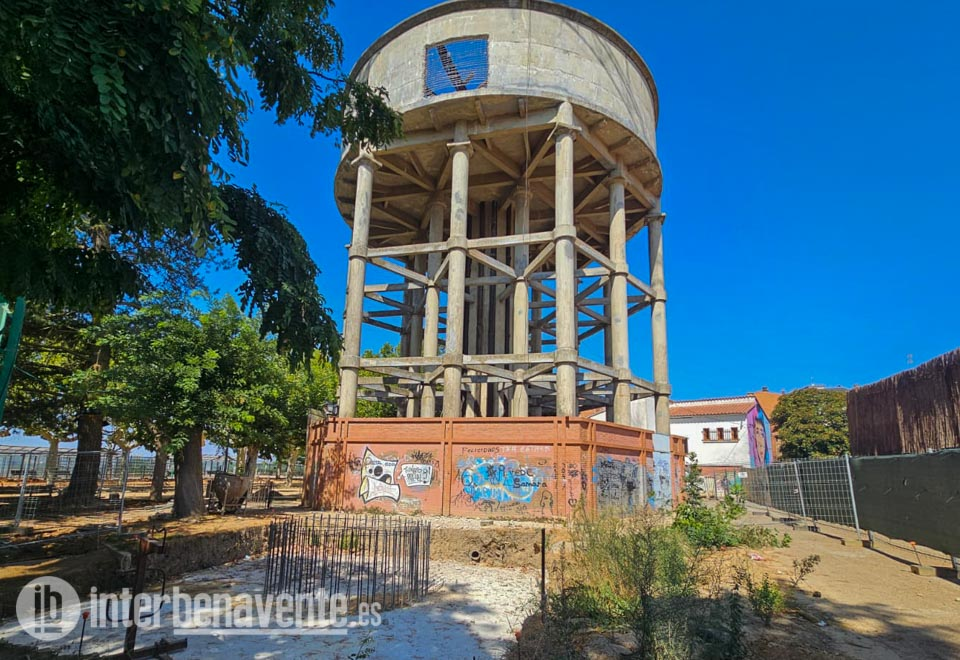
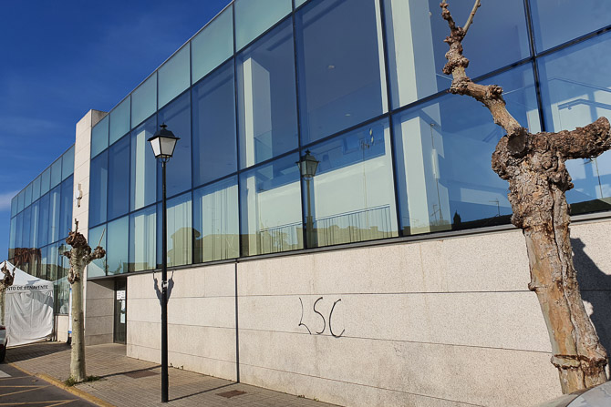
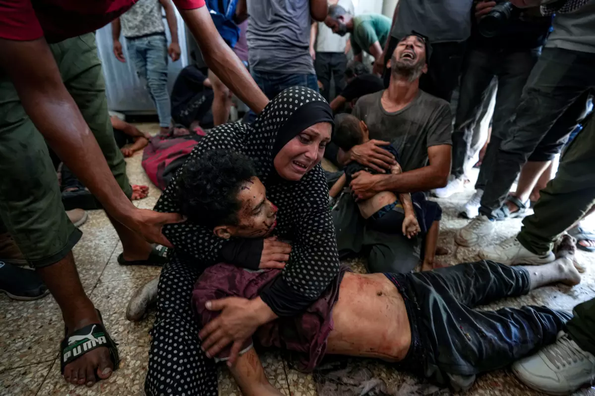

El plazo de este proyecto finalizaba el 12 de octubre de 2025 tras hacer concedido una prórroga de cuatro meses

Imagen del depósito de agua de La Mota en Benavente
El plazo de este proyecto finalizaba el 12 de octubre de 2025 tras hacer concedido una prórroga de cuatro meses
A través de la Junta de Gobierno Local celebrada el pasado 28 de septiembre se aproaba el inicio del expediente de
resolución del contrato de obra de “Rehabilitación del Depósito de la Mota” cuyo proyecto formaba parte del Plan de
Sostenibilidad Turística en Destino 2021 para convertirlo en un mirador por un importe total de 572.163,44 euros (IVA incluido).
Un red fotovoltaica de 150 módulos suministrará energía al Centro de Especialidades de Benavente

Imagen del Centro de Especialidades de Benavente
La Plataforma de contratación del sector público recogía la licitación publicada por el Ente Regional
de la Energía de Castilla y León para la instalación solar fotovoltaica para autoconsumo en el Centro
de Especialidades y Centro de Salud Benavente Norte con un presupuesto inicial de 95.004,7 euros
“Ánimo, Alberto”, ha respondido el presidente del Gobierno | El Congreso vota el embargo de armas a Israel con la incógnita del voto de Podemos
Imagen de los senadores en el Parlamentos español
El líder del PP, Alberto Núñez Feijóo,
ha anunciado este miércoles que su partido va a citar al presidente
del Gobierno para que declare este mismo mes en la comisión
de investigación del caso Koldo en el Senado.
Los cuerpos de los cuatro fallecidos en el colapso del edificio en el centro de Madrid han sido rescatados aunque quedan por confirmar dos de sus identidades
Imagen de los edificios derrumbados en Madrid
Los bomberos han dado por finalizadas en la madrugada de este miércoles, sobre las 2.26, las
labores de rescate en el edificio derrumbado en el centro de Madrid,
después de recuperar los cuerpos sin vida de las dos personas que permanecían desaparecidas.
Las unidades de defensa aéreas rusas frenan la entrada de 184 drones ucranianos. Uno de ellos, según el alcalde de Moscú, Sergei Sobyanin,
se dirigía a la capital rusa.
Ucrania neutralizó también durante la pasada noche 88 drones de larga distancia y dos misiles balísticos rusos
Imagen de un bombrero en Ucrania
El presidente ruso, Vladimir Putin, que celebra este martes su cumpleaños,
ha asegurado que las fuerzas rusas han capturado casi 5.000 kilómetros cuadrados en Ucrania en 2025 y
que Moscú mantiene la iniciativa estratégica total en el campo de batalla.
Los números por sí solos no pueden capturar el impacto que la guerra entre Israel y Hamás ha tenido en la Franja de Gaza.

Imagen de las víctimas de la guerra de Israel y Palestina
Los cementerios están desbordados.
Numerosas fosas comunes salpican la franja.
Ataques aéreos israelíes han matado a familias enteras en sus hogares.
Más de 2.000 personas que buscaban comida han perdido la vida,
según el Ministerio de Salud de Gaza.